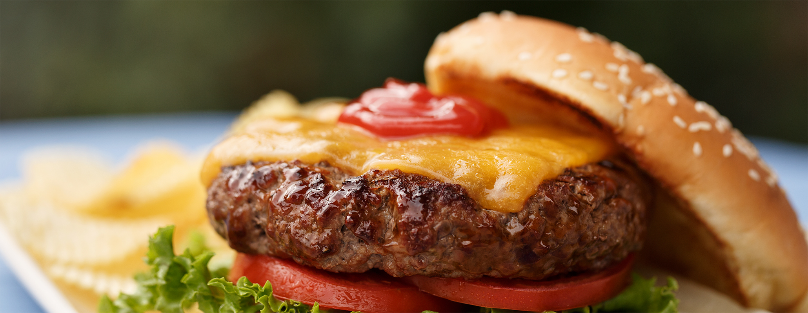

Home
Cuisines
Images
Order Now

HAMBURGER
Description
A hamburger, beefburger or burger is a sandwich consisting of one or more cooked patties of ground meat, usually beef, placed inside a sliced bread roll or bun. The patty may be pan fried, barbecued, or flame broiled.
Recipe
Ingredients
2 pounds ground beef
1 egg, beaten
3/4 cup dry bread crumbs
3 tablespoons evaporated milk
2 tablespoons Worcestershire sauce
1/8 teaspoon cayenne pepper
2 cloves garlic, minced
Directions
Prep 15 m
Cook 10 m
Ready In 35 m
1.Preheat grill for high heat.
2.In a large bowl, mix the ground beef, egg, bread crumbs, evaporated milk, Worcestershire sauce, cayenne pepper, and garlic using your hands.
3.Form the mixture into 8 hamburger patties.
4.Lightly oil the grill grate. Grill patties 5 minutes per side, or until well done.